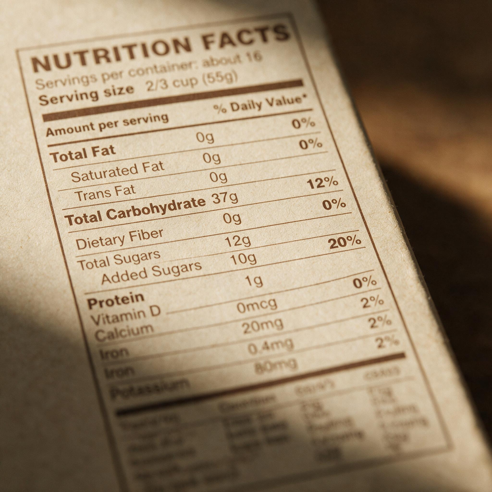

第 16 章
糖税的政治解剖
曼努埃尔在墨西哥城伊斯塔帕拉帕区的小杂货店里整理账本，指尖划过一行行数字时，目光忽然停住了。大瓶装可乐的进货周期，不知何时从十天悄然拉长到了两周半。货架上，两升装的瓶子依然整齐排列着，但顾客伸手取走的频率却肉眼可见地稀疏了。他并未去翻阅财政部税则附表里那密密麻麻的条款，也从未研读过任何关于价格弹性的学术论文。他所知道的，仅仅是下次向供货商下单时，必须少订两箱这种饮料。
这是2014年初。墨西哥全国含糖饮料税刚刚实施，每升加征一比索。在财政部那份冗长的税改方案里，含糖饮料只占表格里很窄的一栏，和香烟、酒精、高热量食品排在一起，几乎不引人注意。但它一旦生效，便成为全国数十万街角小店里最直接的一笔价格变动。

营养成分标签上的“添加糖”栏目
AI 生成插图，非史实影像。
那一行字背后没有展开科学研究，没有等待膳食指南委员会再开一轮会，也没有回答脂肪与糖谁更该为心脏病负责。它只做了一件事：让一升可乐贵出一个比索。
这正是糖税吸引公共卫生阵营的地方。标签修订在美国走了近二十年仍然没有完全落地。
智利警示标签带来了含糖饮料销量的短期下降，但在其他地区，信息工具仍陷在评议、诉讼和制度摩擦里。价格工具绕开了这些。它不要求说服每个人改变习惯，也不要求营养标签在货架上争夺消费者的注意力。它直接作用于收银台，改变的是购买那一瞬间的计算。对公共卫生界中一部分人来说，这像是绕开科学争论泥潭的一条捷径。
伯克利在地方层面率先打开了这条路径。2014年11月，这个加利福尼亚州的城市通过了美国第一个针对含糖饮料的专项税。投票结果出来时，支持者看到的不只是一个自由派飞地的例外，而是一种可能：如果最温和的信息工具都被拖延二十年，那么更直接的价格干预或许可以在地方选举中靠一次投票完成。
伯克利之后，费城也跟进了。但真正提供第一组大面积数据的是墨西哥。墨西哥的全国性糖税设计并不复杂：对所有含糖饮料按每升征税，范围覆盖碳酸饮料、某些果汁饮料和加糖茶饮。税制实施后，研究者很快观察到购买量出现下降。
下降的方向几乎没有争议，幅度在不同研究之间存在差异，但趋势一致：税后第一年下降，第二年进一步下降。发表在《英国医学杂志》上的一项研究给出的数字是，税后第一年应税饮料购买量平均下降百分之六，第二年下降百分之九点七。下降在低收入家庭中最为明显，达到了两位数百分比。
从公共卫生目标看，这是一个清晰的结果。糖税影响最明显的群体，正是肥胖和相关慢性病负担最重的群体之一。价格弹性理论在这里得到了验证：收入越紧，对价格变化越敏感。支持者据此论证，糖税不是一种惩罚，而是一种修正市场失灵的方式。含糖饮料的市场价格长期没有反映它带来的外部健康成本，税收让价格更接近真实社会代价。
伯克利的研究也得出了类似结论。在低收入社区的连锁店里，含糖饮料销售量下降，无糖饮料和瓶装水上升。
费城也看到消费下降，但下降幅度被跨区购买抵消了一部分：人们开车到税区外买汽水。这一细节后来成为反对者反复引用的证据。它并不推翻消费下降的总趋势，却为“糖税无效”提供了说法。
英国没有走直接向消费者课税的路。英国软饮料行业税的设计精细得多。它把税率分成两档：每100毫升含糖超过5克、不超过8克的饮料征一档，含糖超过8克的征更高一档；纯果汁和乳制品被排除在外。这个设计的用意很明显：不直接提高所有饮料价格，而是给制造商一个强烈信号——降低配方里的糖含量，就可以避开高税率档。事实上，许多厂商在税制生效前就开始调整配方。部分饮料的含糖量降到阈值以下，货架上同样的包装，糖少了，价格不一定上涨。
这被一些经济学家视为糖税中最优雅的版本。它像是一种市场激励，而不是价格惩罚。政府也没有把税收直接与消费者行为挂钩，而是把负担放在生产环节，再通过配方调整改变整个市场的产品构成。公共卫生目标在部分产品上被实现，却没有引发一场针对消费者的直接反弹。
英国模式因而成为其他国家讨论糖税时常用的参照。但英国模式也没有逃过“保姆国家”的指控。反对者说，政府不应该告诉工厂配方里能放多少糖，也不应该用税率表去塑造人们能买到什么。
这个批评的重点已经不在糖是否有害，而在国家是否有权用税制干预日常选择。反对者很少在听证会上否认肥胖和糖尿病与含糖饮料之间的关系。他们只是说，税是处理这个问题的一个错误工具。
墨西哥的数据同时给了两方武器。支持者看到的是低收入家庭消费下降最多，认为这是一种成功的健康干预；反对者看到的是低收入家庭承受了更多税收负担，把它称为“累退税”。
累退税这个词在政策辩论里有一个明确含义：税额占低收入者收入的比例高于高收入者。糖税天然具有这个特征，因为它对每升饮料征同样的税，穷人和富人买同一瓶汽水付同样的税。
对公共卫生阵营来说，这原本可以理解成一种累进的健康收益：消费下降最多的是低收入家庭，他们未来的医疗支出可能减少更多。但在政治辩论里，累退税的标签远比远期健康收益更直观。反对者把这个标签反复使用，直到它成为糖税辩论中出现的第一个条件反射。它不需要否定糖的危害，只需要不断指出：糖税让穷人更难买到便宜的饮料。
这个说法有真实的数据支撑，也有选择性的省略。省略掉的是低收入家庭因含糖饮料消费带来的更高疾病风险，以及糖税收入被用于何处。但在一次三十秒的电视广告里，省略比解释更有力量。
产业的精巧之处正在于此。它不再纠缠科学证据，因为科学争论的焦点已经不是糖是否健康。它转向了政策合理性的框架：这个工具是否尊重个人选择，是否伤害小企业，是否让地方政府把财政建立在穷人买汽水的基础上。这三个问题没有一个能被简单回答，却每一个都足够让立法者犹豫。
费城的糖税把这种斗争推向了极致。费城没有把税收说成一项健康措施，而是说成一项教育融资工具。税收收入用于扩大公立学前教育。这个设计有明确的政治目的：当反对者攻击“糖税”时，支持者可以回答，这不是为了惩罚任何人，而是为了让更多的孩子上学。
它把糖税从健康警察的罚单变成了学前班教室的钥匙。但这个设计也为反对者打开了一扇新的门。
他们转而攻击政府财政的诚信：市政府把财政扩张建立在一项正在下降的税基上，如果人们真的少喝汽水，学前班的钱从哪里来？如果人们继续喝汽水，政府是否在期待穷人继续为城里孩子上学买单？这两个问题互为镜像，把支持者困在中间。
糖税收入与健康目标之间出现了一个内在矛盾：税收越有效，税基就越小；税收越稳定，说明行为改变越有限。反对者不必解决这个矛盾，只需要在每一次预算审查时把它提出来。
费城还经历了法律诉讼。诉讼的核心不是糖是否有害，而是地方政府是否有权征收这项税。原告称费城的糖税与州销售税在功能上重叠，违反了州法律对地方税权的限制。法院最终支持了费城的税令，但诉讼本身耗掉了时间、政治资本和公共注意力。每一年税令继续存活，反对者都可以宣布他们在法律和政治两个层面继续施压。支持者则必须不断解释，为什么一项已经通过并在法院胜诉的税，还需要在每一次选举和每一次听证会上重新证明自己。加利福尼亚州的斗争更清晰地展示了行业策略的另一种形态。
在伯克利通过糖税后，加州其他城市开始跟进讨论。行业没有逐一在每个城市组织公投，而是推动州级立法，禁止县市在若干年内新设饮料税，以此换取撤回一项更严苛的提案。这一策略的结果是，已在伯克利等城市生效的税令可以保留，但扩散路径被从上游截断。它不抹掉已经存在的糖税，却让新的地方试验难以启动。
这比直接废除伯克利税更有效。直接废除会引发一场高关注度的公投，支持者可以借此动员全国注意力和资金。而在州议会里处理地方税的权限问题，则显得更像一次制度调整，而不是一次公共卫生对抗。反对者把问题从“要不要糖税”变成了地方税权的归属问题。在这个框架下，糖税的支持者被迫去为地方自治辩护，而不再谈论肥胖率。
库克县的经验展示了另一个后果。这个伊利诺伊州的县通过了一项含糖饮料税，但强烈反弹在极短时间内聚集起来。反对者把税令称为“食品税”，这个名称迅速在地方媒体上扩散。它把含糖饮料从“不必要的糖”重新归类为“食品”。
一旦这种归类被接受，税就变成了在食品价格上额外增加负担，而公众对食品税的天然反感比糖税大得多。库克县最终废除了这项税令，它存在的时间很短，但消耗的政治资本却很大。
“食品税”这个名称是话语框架转移的一个典型案例。糖税支持者谈的是“含糖饮料”，反对者则不断说“食品”。糖税支持者谈的是“公共卫生”，反对者谈的是“家庭预算”。糖税支持者谈的是“医疗成本”，反对者谈的是“政府干预”。双方说的几乎不是同一个议题。产业的胜利不在于说服公众糖是健康的，而在于重新定义了争论的边界：一项糖税是否通过，不再取决于糖的健康证据，而取决于税是否公平、是否尊重选择、是否扩大政府权力。
这些反击联盟的构成也很复杂。行业资金会流向一些少数族裔社区组织、小企业协会和劳工团体，让它们出面反对糖税。出面反对的人通常是社区里真实存在的杂货店老板、装瓶厂工人和商会代表。他们不认为自己在替饮料行业说话，而是在替自己的生意和邻居说话。
当听证会上出现的是这些面孔时，糖税就不再像是一个公共卫生问题，而像一个生计问题。行业无需假装，它只需要让这些真实的经济焦虑被看见。
曼努埃尔在伊斯塔帕拉帕区经营杂货店已经十五年。他的账本记录的不只是销售额下移，还有顾客转去购买更便宜的其他甜饮料——那些不在征税范围内的本地品牌和散装饮料。这个变化在公共卫生统计里是“消费下降”，在家庭预算里是“支出增加”，在小店账本里是“利润减少”。三本账各自真实，却指向不同的政策判断。
这正是糖税脆弱性的根源。价格信号的作用是快速且可测量的，但它的代价分布也是快速且可测量的。支持者希望拿出来的数据能证明政策有效，反对者同样可以拿同一组数据证明政策不公。产业不需要伪造任何科学证据。它只需要让后一种理解在政治市场上更受欢迎。
于是出现了一个值得注意的现象：糖税面对的证据门槛比当年脂肪假说进入膳食指南时高出许多。当年关于脂肪与心脏病的证据并不完整，却足以让政策制定者把低脂建议推向全国。
如今糖税在多个地区已经显示出行为改变的方向，反对者却仍然可以要求拿出随机对照试验、长期健康结果、跨区替代效应、就业影响和税收归宿的完整证据。每一个未回答的问题都被转化为“证据不足”。糖本身是否危害健康已经很少被争论的中心议题所占据，但糖税是否值得推行成了一个需要比药品审批还严格论证的问题。
这种证据标准的不对称暗示着产业影响的重心已经转移。半个世纪前，糖业研究基金会把科学的注意力引向脂肪，让糖在膳食指南的讨论中退到背景里。如今科学已经不允许糖完全隐身，产业便不再试图让糖从证据中消失。它转而把争论保持在政策工具的正当性上。只要糖税被拖入累退税、个人自由、小企业困境和地方财政诚信的讨论，政策制定者就必须不断权衡而无法快速行动。
每一次权衡都是一次延迟，每一次延迟都意味着更多含糖饮料被消费掉。英国的分级税在绕过了部分批评，因为它没有被设计成一项直接落在消费者头上的负担。但即使如此，“保姆国家”的指控仍如影随形。
反对者不关心税率分在5克还是8克，他们只关心政府是否在干涉人们喝什么。这个阈值在法规文本里是精确的——每100毫升含糖超过5克为一档、超过8克为另一档——但它在公共辩论里被简化成一句话：政府连你喝饮料里的糖含量都要立一个税表。这种简化让支持者陷入被动。他们必须解释复杂的税制设计，解释为什么纯果汁被排除在外，解释为什么牛奶不在征税范围之内。解释越多，信息传播越弱。反对者只需要一句概括性的口号——不要政府管你的汽水——就能抵消一篇长文的分析。这是政治传播的不对称，也是糖税扩散速度放缓的一个重要原因。
从墨西哥到英国，从伯克利到费城，糖税并没有在全球范围内夭折。它在一些地方持续存在，在另一些地方被废除或限制。它没有像反对者希望的那样彻底消失，也没有像支持者希望的那样迅速扩散。它变成了一场一场特殊战斗的总和。每一场战斗都昂贵、漫长，消耗掉公共卫生阵营本可以用于其他政策的注意力和资源。糖税的有效性并不保证它的政治可持续性。
这一点在墨西哥尤其明显。全国数据展示的消费下降没有让糖税在政治辩论中免受攻击；相反，它为攻击者提供了“累退税”的素材。当支持者拿着健康收益去下一次议会作证时，反对者手里拿着的是家庭开支占比的数据。两套数据同时在会议室里传递，谁能让自己的框架被记者写进标题谁就赢得了那一轮。
这样持续十年的拉锯留下的不只是各地税率的差别，还有一种政策气候：科学证据不再是政策正当性的充分条件。糖税必须证明自己公平，证明自己不伤害小企业，证明自己不会成为政府无节制花钱的借口。这些要求并非不合理，但当它们被用作所有政策讨论的固定前置条件时每一项干预都被提前拖入一个代价高昂的论证过程当中。公共卫生倡导者必须时刻准备着去打一场他们原本以为已经赢下的战争。
费城的一间由糖税收入资助的学前教育教室里秋季入学名单上多了不少孩子。教室在午后安静下来门口鞋柜里的小鞋还整齐排着。
这个场景被支持者印成传单也被反对者拿来做文章：同一笔钱成是糖税给贫困孩子买来的课桌也成是政府用穷人买汽水的钱撑起来的政绩。同一间教室两套叙述谁也不否认孩子需要上学。
分歧只在于那笔钱该从哪里来以及谁来定义哪一笔税是正当的。伯克利的一个公园里空了的饮料瓶回收箱立在步道旁边。箱子上的标识还在提醒人们分类投放但里面的塑料瓶比一年前少了些含糖饮料的包装也少了些瓶装水的标签多了起来。这个变化在公共卫生报告里是一条下降的曲线在社区日常里是一个不那么满的回收箱。它不说话只是立在那里。
糖税从地方试验到全球扩散的这十年说明了一个政治学上的简单事实：改变价格比改变共识容易但维持价格工具比维持共识更难。价格可以把健康成本推回消费决策却无法决定人们如何理解这笔成本。
当饮料行业不再需要替糖说话而是转而为自由选择、小本生意和社区自治说话时糖就已经退到争论后面去了。糖税的支持者赢得了消费数据却没有赢得话语的定价权。这大概是价格工具最深刻的局限。
它能在收银台前改变一次购买却不能在公共辩论中定义一次购买的道德含义。糖税依然存在但每一次续期、每一次扩大到新辖区都需要重新打一场昂贵的政治仗。支持者从墨西哥带去的消费下降数据仍然真实只是它们不再自动转化为政策胜利。摆在下一场听证会门口的不是糖是否有害而是税是否公平。这个问题不会因为多了一项研究而消失。